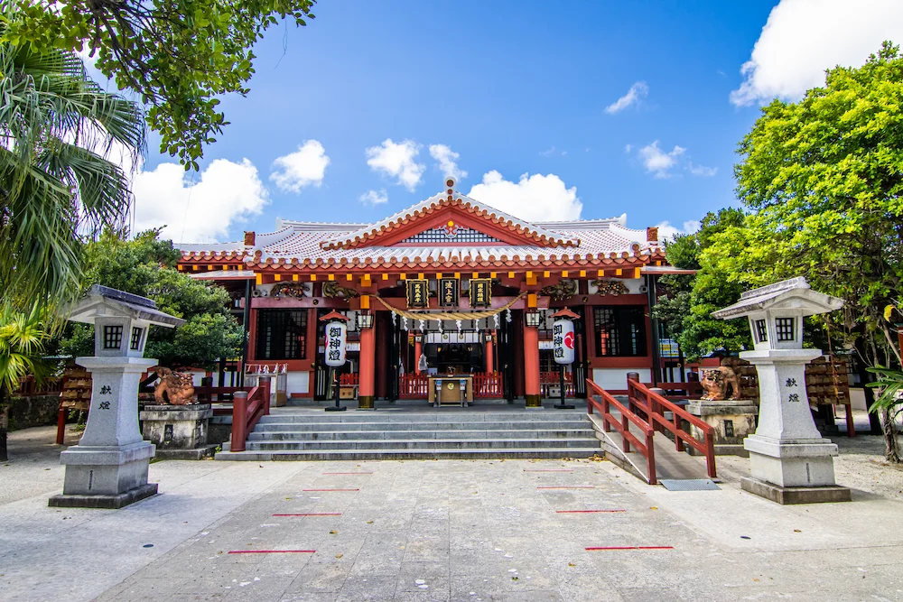

波上宮（Naminoue-gū）

住所
〒900-0031
沖縄県那覇市若狭1-25-11
旧国名
琉球国一宮
御祭神
伊弉冉尊（いざなみのみこと）,速玉男尊（はやたまおのみこと）
事解男尊（ことさかおのみこと）
波上宮について
沖縄県にある波上宮は、隣接する琉球王府の祈願所護国寺を別当寺として、琉球八社の最上位とされています。『波上宮略記』によると、
遙か昔、人々が彼方の海神の国（ニライカナイ）の神々に豊穣や平穏を祈った聖地が、波上宮の鎮座する波の上の崖端で、
拝所として日々の祈りを捧げたのにはじまるとすると記載があります。
波上宮は太平洋戦争末期の沖縄戦で灰燼（かいじん）に帰しました。しかし、昭和28年（1953）に本殿、その後、拝殿が再建されました。
そして、平成5年（1993）には正遷座祭が催行されました。
波上宮は、那覇市民憩いのビーチ・波上ビーチの上に鎮座しています。社殿は青い海に面した絶壁の上に、南国沖縄らしい明るい朱塗りの美しい姿をしています。
お祭り
『節分祭』・・2月3日の節分の日に行われる行事です。波上宮は、海上守護や家内安全・商売繁昌、厄災除などの御利益で有名で、1年の無病息災を願い、
節分祭が行われています。年男や年女らにより、豆やお菓子などがまかれ、多くの参拝客で賑わいます。